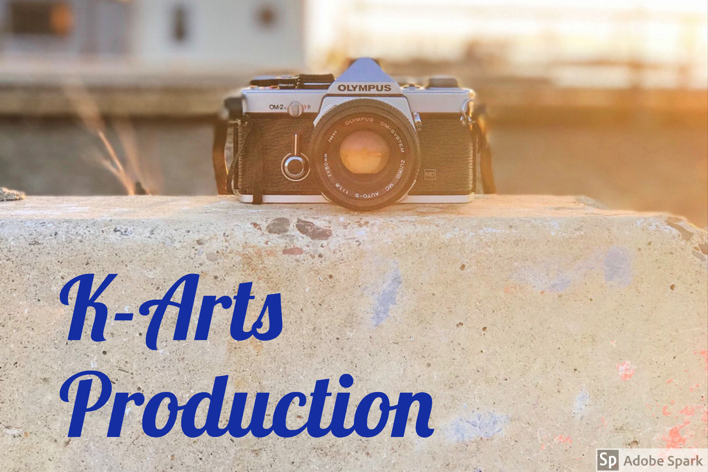

☰ open
K-Arts Production

Bio
K-arts production is production company started by me Khaliah John-Baptiste. I started this production company in 9th grade after filming a music video for school. I felt as thought with me working on all these media project I need to basically but my mark on all my project. An with that being said I came up with K-arts production. The K stands for Khaliah and arts because I go to a arts school. Also my production company does more than just videos we do photography and music production.
Picture